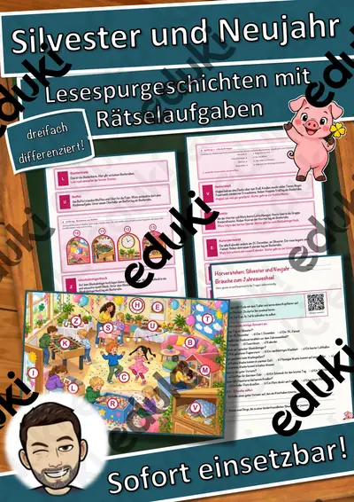
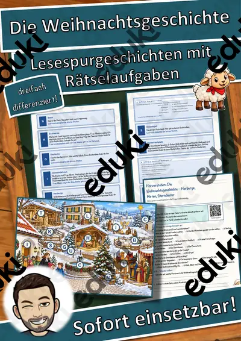
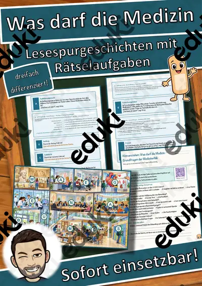
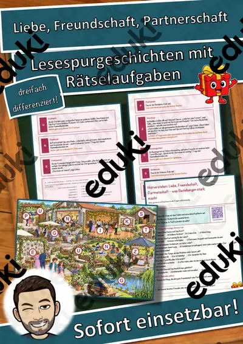

Materialpaket Advent und Weihnachten für die 3. Klasse: 8 Lesespurgeschichten mit Rätselaufgaben (Barbarazweige, Lebkuchen, Santa Lucia, Sternsinger & mehr)

Materialpaket Feste im Winter für die 2. Klasse: 6 Lesespurgeschichten mit Rätselaufgaben (Sankt Martin, Nikolaus, Advent, Weihnachten & Silvester)

Aschermittwoch und Fastenzeit – vom Fasching bis Ostern – Lesespurgeschichte mit Rätselaufgaben (Klasse 6)

Der Tag der Muttersprache – viele Sprachen in meiner Klasse – Lesespurgeschichte mit Rätselaufgaben (Klasse 5)

Gute Vorsätze – was ich ändern will – Lesespurgeschichte mit Rätselaufgaben (Klasse 8)

Ostern – Bräuche rund ums Osterfest – Lesespurgeschichte mit Rätselaufgaben (Klasse 2)

Das Frühlingsfest – Neujahr in China – Lesespurgeschichte mit Rätselaufgaben (Klasse 5)

Nachhaltig schenken – Zeit, Selbstgemachtes und Verpackung ohne Müll – Lesespurgeschichte mit Rätselaufgaben (Klasse 6)

Weihnachten in anderen Ländern – Bräuche rund um die Welt – Lesespurgeschichte mit Rätselaufgaben (Klasse 2)

Barbarazweige – der Brauch am 4. Dezember – Lesespurgeschichte mit Rätselaufgaben (Klasse 3)

Streit schlichten – wir finden eine Lösung – Lesespurgeschichte mit Rätselaufgaben (Klasse 3)

Silvester und Neujahr – Bräuche zum Jahreswechsel – Lesespurgeschichte mit Rätselaufgaben (Klasse 2)

Die Sternsinger – Brauch am Dreikönigstag – Lesespurgeschichte mit Rätselaufgaben (Klasse 3)

Santa Lucia – das Lichterfest im Dezember – Lesespurgeschichte mit Rätselaufgaben (Klasse 3)

Die Weihnachtsgeschichte – Herberge, Hirten, Sterndeuter – Lesespurgeschichte mit Rätselaufgaben (Klasse 2)

Nikolaus von Myra – Legende und Brauch – Lesespurgeschichte mit Rätselaufgaben (Klasse 2)

Sankt Martin – vom Teilen und Helfen – Lesespurgeschichte mit Rätselaufgaben (Klasse 2)

Abschied und Trauer – wie Menschen ihrer Toten gedenken – Lesespurgeschichte mit Rätselaufgaben (Klasse 9)

Stopp sagen und Hilfe holen – Grenzen erkennen – Lesespurgeschichte mit Rätselaufgaben (Klasse 1)

Was darf die Medizin? – Grundfragen der Medizinethik – Lesespurgeschichte mit Rätselaufgaben (Klasse 10)

Echte Freunde – Freundschaft, Clique und Gruppendruck – Lesespurgeschichte mit Rätselaufgaben (Klasse 6)

Fair wirtschaften – Wirtschaftsethik zwischen Gewinn und Verantwortung – Lesespurgeschichte mit Rätselaufgaben (Klasse 10)

Ich bin ich – Selbstwert, Stärken und Gefühle in der Pubertät – Lesespurgeschichte mit Rätselaufgaben (Klasse 7)

Werden und Vergehen – ein Jahr im Garten von Oma Rosi – Lesespurgeschichte mit Rätselaufgaben (Klasse 3)

Wofür lohnt es sich zu leben? – Sinnsuche im Jugendalter – Lesespurgeschichte mit Rätselaufgaben (Klasse 8)

Freizeit sinnvoll gestalten – was macht meine freie Zeit wertvoll? – Lesespurgeschichte mit Rätselaufgaben (Klasse 6)

Rituale im Alltag – was uns jeden Tag begleitet – Lesespurgeschichte mit Rätselaufgaben (Klasse 1)

Liebe, Freundschaft, Partnerschaft – was Beziehungen stark macht – Lesespurgeschichte mit Rätselaufgaben (Klasse 9)

Rollenbilder im Wandel – Gleichberechtigung von Frau und Mann – Lesespurgeschichte mit Rätselaufgaben (Klasse 10)

Jeder sieht die Welt anders – Wahrnehmung und Blickwinkel – Lesespurgeschichte mit Rätselaufgaben (Klasse 5)
Keine Materialien gefunden – versuch einen anderen Suchbegriff oder Filter.
Werte im Gespräch
Im Ethikunterricht gibt es selten die eine richtige Antwort. Die Lesespuren dieser Seite erzählen deshalb Situationen, in denen Figuren entscheiden müssen, und stellen Fragen, die zum Begründen herausfordern. Der Text liefert die Grundlage, das Klassengespräch den Rest.
Die Geschichten bleiben bewusst offen: Sie schildern eine Lage und die Sichtweisen der Beteiligten, ohne das Ergebnis vorzugeben. So entsteht Raum für Diskussion, und das Material eignet sich auch für Vertretungsstunden, in denen kein eigener Gesprächsfaden vorbereitet werden konnte.
Ein weiterer Vorteil: Viele Titel greifen Anlässe des Schuljahres auf, etwa Advent, Ostern oder Silvester, und lassen sich so in den Jahreslauf einbinden, ohne dass dafür ein eigenes Thema gesucht werden muss.
Klasse 1 bis 4: Miteinander und Feste
Die Grundschule beginnt mit Grundthemen des Zusammenlebens: „Stopp sagen und Hilfe holen“, „Rituale im Alltag“ und „Streit schlichten“. Dazu kommen Feste verschiedener Kulturen, gebündelt im „Materialpaket Feste im Winter für die 2. Klasse“ und im „Materialpaket Advent und Weihnachten für die 3. Klasse“, darunter „Santa Lucia“ und „Die Sternsinger“.
Klasse 5 bis 7: Zusammenleben und Identität
Mit „Jeder sieht die Welt anders“, „Gewinnen, verlieren, mitspielen“ und „Zusammenleben in der Familie“ geht es in Klasse 5 um Perspektiven. Klasse 6 fragt nach „Echte Freunde“, „Nachhaltig schenken“ und „Wie Menschen beten“. In Klasse 7 stehen „Ich bin ich“, „Erwachsen werden“ und „Mobbing“ im Fokus.
Klasse 8 bis 10: Große Fragen
Die Oberstufen-Titel sind anspruchsvoller: „Wofür lohnt es sich zu leben?“, „Älter werden“, „Bewusst konsumieren“ und „Sich für andere einsetzen“ in Klasse 8, „Abschied und Trauer“ und „Liebe, Freundschaft, Partnerschaft“ in Klasse 9, „Was darf die Medizin?“, „Rollenbilder im Wandel“ und „Freiheit und Verantwortung“ in Klasse 10.
Häufige Fragen
Sind religiöse Themen neutral behandelt?
Die Materialien beschreiben Feste und Bräuche, ohne zu bewerten. Sie eignen sich für Klassen mit unterschiedlichen Hintergründen.
Sind sensible Themen wie Trauer enthalten?
Ja, in den höheren Klassen. Lehrkräfte sollten prüfen, ob die Gruppe dafür bereit ist.
Gibt es Gesprächsimpulse?
Die Aufgaben am Ende der Lesespuren fordern zum Begründen und Vergleichen auf.
Passt das Material auch zu Religion?
Teilweise ja. Feste und Bräuche lassen sich in beiden Fächern verwenden.